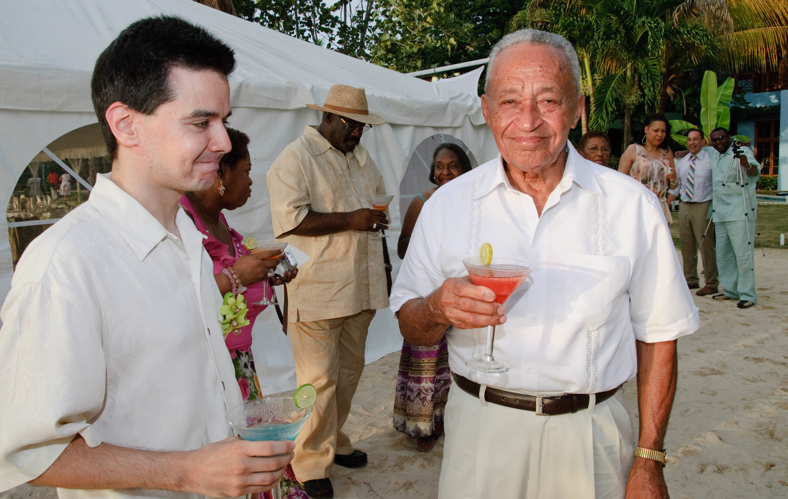
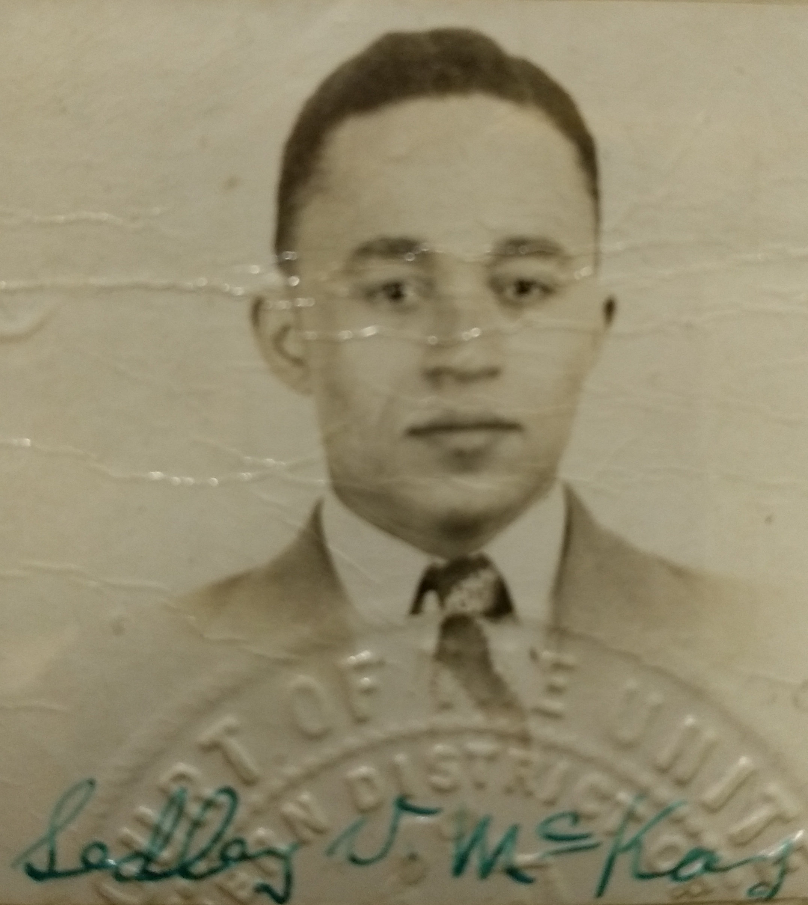

Saturday, Sept. 9, 2017
In memoriam:
Sedley V. McKay, 91
By Peter A. McKay
ORANGE PARK, Fla. – Sedley Vecas McKay, 91, died peacefully at home on Tuesday, Sept. 5, 2017, after a long illness. Thus ended an epic life that entailed many roles – devoted family man, farmer, soldier, New York transit worker, jilted Brooklyn Dodgers fan, occasional consumer of white rum strong enough to run a car, avid newspaper reader, tinkerer, church vestry member, armchair O.J. Simpson trial analyst, and sworn nemesis of the squirrels eating his tomatoes in the backyard.
He was the type of person who could turn gardening into full-contact sport.
Sedley was born in 1925 in the small town of Tangle River in St. James Parish, Jamaica, to Wilhelmina "Mimi" McKay and Peter Samuel McKay. Family lore has it that Sedley, the youngest of the couple’s 10 children, was born either Sept. 30 or Oct. 1. But his birth wasn’t registered until much later in Spanish Town, Jamaica's colonial capital at the time under British rule. It was officially dated Oct. 31.
All Sedley’s siblings preceded him in death: Lerlene, Caroline, Adlyn, Edna, Daniel, Helene, Daisy, Rachael, William, and Lucy.
During Sedley's childhood, his family tended bananas, sugarcane, and other crops on the family estate, called Clydeside. It was named after the Clyde River in Scotland, apparently by some previous (but presently unidentified) ancestor who came to Jamaica from that country.
Sedley’s father Peter Samuel also built up a small business trucking other local farmers’ crops to market, where everyone’s chief customer was the massive United Fruit Co. (The trade such men engaged in was later celebrated in Harry Belafonte’s 1956 hit “Banana Boat Song.” Its lyrics, though playful, function as a fairly accurate description of how one of the island’s chief crops was once bought and sold at scale.)
In 1929, when Sedley was not yet 4 years old, Peter Samuel died tragically while taking a load of bananas to town with several neighbors. Their truck veered off a precipice on the side of one of hilly St. James Parish’s dirt roads.
Through the Depression, Mimi raised her children, as well as several nieces, nephews, and grandchildren. That often meant delegating daily tasks around Clydeside to the older siblings, whom she held strictly responsible at all times for the younger family members. As the youngest of his generation of siblings, Sedley thus got the most attention and grew quite close to his brothers and sisters.
As a teenager, Sedley completed his high-school education at Knockalva Agricultural School in Ramble, Jamaica.
One by one, several of the McKay siblings began leaving Jamaica in the 1940s to seek greater opportunity in other countries, including Britain and Canada. But most of them – seven in all – ultimately settled in the United States.
Sedley arrived in 1947, sponsored by his beloved aunt, Rachel “Agee” Blackellar, who ran a successful business as a shirtmaker and seamstress in New York’s historic Harlem neighborhood. He worked odd jobs in Manhattan’s restaurants, nightclubs, and garages with the intent of making some money to continue his education in agriculture, then return to Clydeside someday.
Uncle Sam had other plans for him. In 1950, while still not a citizen, Sedley was drafted into the Army during the Korean War. He served in the motor pool at home, at first in an all-black unit, as the Army was then still in the process of desegregating under executive order from President Harry S. Truman. Eventually, Sedley’s unit was integrated as well – a change for which Sedley often praised the president even decades later.
While in the Army, Sedley married his first wife, Amabel. They had four children: Ian, Colin, David, and Patricia. The middle two, David and Colin, preceded Sedley in death due to complications of sickle-cell anemia.
Sedley was honorably discharged from the Army in 1952 with the rank of private.
He proudly became a U.S. citizen on Aug. 20, 1953. On his naturalization certificate, Sedley’s former nationality is listed as British, owing to Jamaica’s colonial status at the time. (It became independent in 1962.)
In 1959, he went to work as a bus driver for New York’s Metropolitan Transit Authority, working out of Brooklyn’s Flatbush depot. He would stay almost 30 years, advancing to the position of surface line dispatcher. Along the way, he also encountered all manner of Brooklyn characters straight out of a sitcom or Martin Scorsese movie.
Not least of these were the depot workers themselves, who were apt to address one another by nicknames that were always distinctive, though sometimes not flattering. One gentleman answered to “Loud Jackson,” for instance. But, for Sedley, the boys coined an affectionate moniker that he wore as a badge of honor: “Mack.”
In 1971, Sedley married the former Gabrielle Esposito, who survives him. They soon after bought a home in Flatbush and had two children, Peter Andrew and Lou-Ann.
In 1987, after Sedley had retired from the MTA, the family moved to Orange Park, Fla. In doing so, they followed in the footsteps of Sedley’s sister Daisy and her husband Sydney Bowlin, who had also relocated to the area.
In retirement, Sedley returned to his passion for agriculture – albeit on a smaller scale than in the Clydeside days – by cultivating various fruit trees and landscaping features around his home in suburban Orange Park. He visited old friends in New York often. He enjoyed the company of his five grandchildren. And he adopted many neighbors’ and friends’ children and grandchildren as his own as well.
As Sedley’s health declined in later years, he cut back and eventually eliminated altogether his daily gardening. It has since taken several people to replace him, including neighbors who stop by to cut grass or do other upkeep. For certain other tasks, like pool maintenance, Gabrielle has hired professionals to check in regularly. And some high-maintenance features of the property have been abandoned altogether.
In one distant, now little-trafficked corner of the large backyard, a family of stray foxes recently took up residence. They dug holes that they use as a den, and they sometimes emerge in the early mornings, when they think no people are watching, to drink out of the swimming pool.
Now and then, one even eats a squirrel.